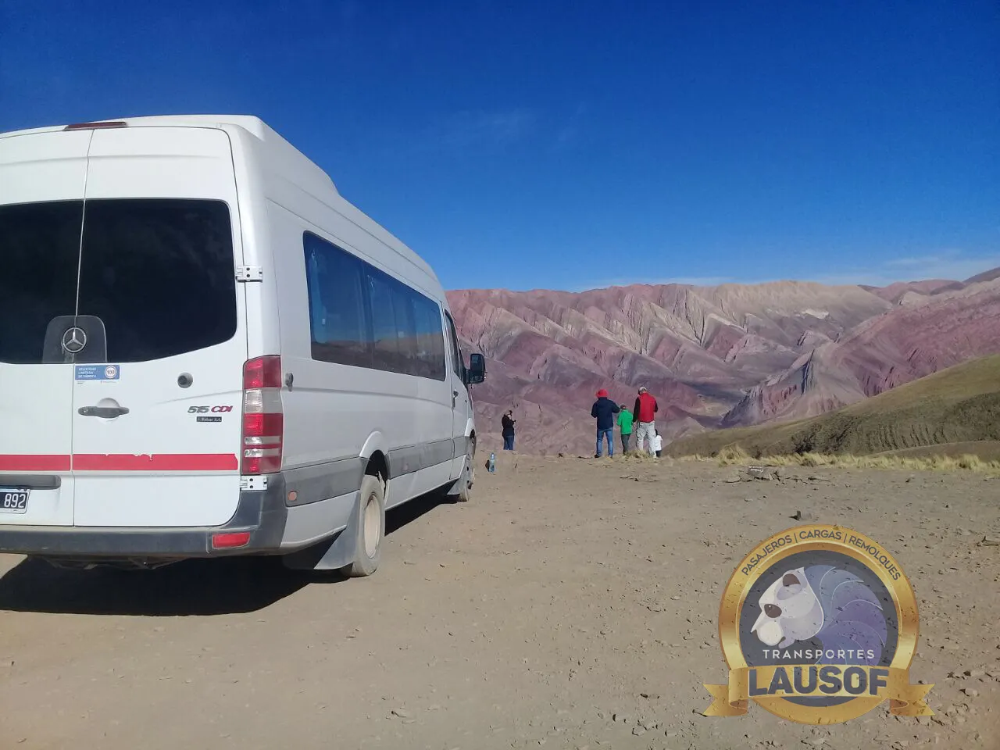

Quebrada de Humahuaca, Jujuy
Traslado en combi de Salta a Purmamarca, Tilcara y Humahuaca.
Una combi privada de 19+1 plazas con chofer profesional, desde su hotel en Salta o desde el aeropuerto hasta los pueblos de la Quebrada de Humahuaca. Solo ida, ida y vuelta en el día o un viaje de varios días, para familias, grupos de amigos y agencias de turismo. La reserva se coordina directamente con la empresa que pone la unidad.
La ruta
Rutas, distancias y tiempos desde Salta
La Quebrada de Humahuaca es un valle de unos 155 km en Jujuy, declarado Patrimonio Mundial por la UNESCO. Desde Salta se llega por San Salvador de Jujuy: Purmamarca es el primer pueblo y, más al norte, siguen Tilcara y Humahuaca.
| Tramo | Ruta, distancia y tiempo aproximados, altura |
|---|---|
| Salta capital a Purmamarca | Unos 188 km y 2 h 50 min por la autopista con peaje hasta San Salvador de Jujuy (RN 9, RN 34 y RN 66); después, la RN 9 hacia el norte y los últimos 3 km por la RN 52 hasta el pueblo. Hay una opción más corta y más lenta por la RN 9 vieja, por La Caldera: unos 158 km y 3 h 15 min. Purmamarca está a 2.324 m. |
| Aeropuerto de Salta a Purmamarca | Unos 191 km y 2 h 55 min. El aeropuerto queda a unos 11 km del centro, así que salir desde ahí casi no alarga el viaje. |
| Purmamarca, Tilcara y Humahuaca | Unos 70 km y 1 h 15 min hacia el norte por la RN 9, que recorre el valle. Tilcara queda a unos 26 km de Purmamarca, a 2.465 m. |
| Salta capital a Humahuaca | Unos 250 km y 3 h 45 min solo ida. Desde el aeropuerto, unos 253 km y 3 h 55 min. Humahuaca está a unos 3.012 m. |
| Mirador del Hornocal (opcional) | Unos 23 km de ripio por la ruta provincial 73 desde Humahuaca, alrededor de 45 min por tramo. El mirador está a unos 4.350 m. |
Distancias y tiempos: estimaciones de Google Maps consultadas el 10 de octubre de 2026, sin paradas. En la práctica el viaje lleva más por las paradas para fotos, el tránsito a la salida de Salta y de Jujuy y las obras en la ruta. Alturas: Secretaría de Turismo de la Nación (Purmamarca, Tilcara, Humahuaca) y la guía Jujuy Turismo (Hornocal).



Cómo armar el viaje
Solo ida, el día completo o varios días
Solo ida. Lo más habitual es ir del aeropuerto de Salta directo a un hotel de Purmamarca, Tilcara o Humahuaca, o volver desde la Quebrada a un hotel de Salta o al aeropuerto para tomar el vuelo.
Ida y vuelta en el día desde Salta. Purmamarca, Tilcara y Humahuaca con regreso suman unos 500 km y más de siete horas de manejo sin contar las paradas. Se puede hacer en un día largo; muchos grupos prefieren dormir una noche en Purmamarca o en Tilcara y repartir el recorrido.
Varios días. Con el itinerario y las noches previstas, organizamos la unidad y el chofer para todo el viaje. La Quebrada se combina bien con las Salinas Grandes, a las que se llega desde Purmamarca: los detalles están en Salinas Grandes desde Salta.
El Hornocal. Lo hacemos como tramo opcional desde Humahuaca, siempre que el camino de ripio esté transitable: las lluvias y la erosión pueden cortarlo o volverlo más lento. La guía Jujuy Turismo recomienda ir por la tarde, cuando el sol resalta los colores del cerro. Con el Hornocal incluido, el viaje rinde más en dos días que en uno.
Época del año. La temporada de lluvias va de diciembre a marzo; la Secretaría de Turismo de la Nación indica de abril a noviembre como la mejor época. En invierno (julio a septiembre) las noches son frías y conviene llevar abrigo.
Paradas en el camino. El Paseo de los Colorados en Purmamarca, cuyos cerros cambian de color con la luz del día; el Pucará de Tilcara, una fortaleza prehispánica; y el monumento al Trópico de Capricornio en Huacalera, entre Tilcara y Humahuaca. Las paradas las elige el grupo.
Altura
Hasta dónde sube la ruta y qué significa para los pasajeros
Salta capital está a unos 1.200 m. La ruta sube a 2.324 m en Purmamarca, 2.465 m en Tilcara y unos 3.012 m en Humahuaca. El mirador del Hornocal está a unos 4.350 m.
- Los Centros para el Control y la Prevención de Enfermedades de Estados Unidos (CDC) señalan que por encima de unos 2.440 m pueden aparecer síntomas de mal de altura, y aconsejan no pasar en un mismo día de una altura baja a dormir por encima de unos 2.750 m.
- En la práctica, Purmamarca y Tilcara quedan por debajo de ese límite para la primera noche; Humahuaca queda por encima. Subir en el día y dormir más abajo es justamente lo que recomiendan los CDC.
- Los síntomas habituales son dolor de cabeza, cansancio, falta de apetito y náuseas. Si empeoran, lo indicado es bajar, que en esta ruta significa volver valle abajo.
- Las personas con enfermedades cardíacas o respiratorias, y las embarazadas, deberían consultar a su médico antes del viaje.
En la ruta subimos sin apuro y paramos cuando el grupo lo necesita. Si alguien se siente mal, volvemos.
La unidad
Qué incluye y qué no
- Una combi privada de 19+1 plazas para el grupo, con chofer profesional: un grupo de 4 a 10 personas viaja con lugar de sobra, y los grupos más grandes viajan en combis adicionales
- Camioneta 4x4 o combi preparada para ripio cuando el plan incluye el Hornocal
- Búsqueda en el hotel en Salta o en el aeropuerto
- Aire acondicionado en todas las unidades, que se revisan antes de cada salida
- Paradas a elección del grupo a lo largo de la ruta
- Factura A para empresas y agencias
- No es una excursión guiada: el chofer conoce el camino, pero no es guía de turismo
- Atención en inglés por correo y WhatsApp para pasajeros extranjeros
El espacio para equipaje en una combi es limitado: las normas de la CNRT no permiten valijas grandes ni bultos que obstruyan el pasillo. Indíquenos cuántas valijas lleva el grupo y planificamos la unidad en consecuencia.
Cómo reservar
Qué datos necesitamos para cotizar
- La fecha o las fechas, y si es solo ida, ida y vuelta en el día o un viaje de varios días.
- Dónde empieza y dónde termina: el hotel, o el número de vuelo y la hora de llegada al aeropuerto de Salta.
- Cuántas personas viajan y cuántas valijas llevan.
- Las paradas que les interesan, si ya las tienen pensadas (con Hornocal o sin Hornocal).
- Un nombre y un contacto para la reserva.
Cotizamos la combi completa para el recorrido, no por asiento. No publicamos precios: cada viaje depende de la ruta, las fechas y la unidad que necesita.
Preguntas frecuentes
Lo que suelen preguntar los grupos
¿Pueden buscarnos en el aeropuerto de Salta y llevarnos directo a Purmamarca?
Sí. Necesitamos el número de vuelo y la hora de llegada. Son unos 191 km y cerca de tres horas de viaje sin paradas, según Google Maps.
¿Se pueden conocer Purmamarca, Tilcara y Humahuaca en un solo día desde Salta?
Sí, en un día largo: unos 500 km ida y vuelta y más de siete horas de manejo sin contar las paradas. Si el grupo puede quedarse una noche en la Quebrada, el día se hace más llevadero y hay tiempo para recorrer cada pueblo.
¿El Hornocal está incluido?
Solo si lo piden. Es un tramo opcional desde Humahuaca, por unos 23 km de ripio; conviene ir por la tarde y depende de que el camino esté transitable después de las lluvias. Lo confirmamos junto con la cotización.
¿Se pueden sumar las Salinas Grandes?
Sí. Las Salinas quedan unos 66 km al oeste de Purmamarca por la RN 52, pasando por la Cuesta de Lipán. Entran en el mismo viaje con una noche en Purmamarca. Los detalles están en la página de Salinas Grandes.
¿Es una excursión guiada?
No. Es una unidad privada con un chofer profesional que conoce el camino. Si quieren un guía de turismo en algún lugar en particular, indíquenlo al pedir la cotización y les decimos qué se puede organizar.
¿Publican los precios?
No. El precio es por la unidad completa y depende de la ruta, las fechas, la cantidad de pasajeros y la unidad que hace falta. Con esos datos les enviamos la cotización.
Más recorridos
Todos los circuitos de turismo · Salinas Grandes desde Salta · Combis a recitales y festivales
Lausof SRL es una empresa familiar de transporte con base en Salta. Hacemos transporte de pasajeros desde 2010, con habilitación CNRT N.º 60284. Conozca la empresa.
Actualizado el 10 de octubre de 2026.
¿Organizamos el viaje a la Quebrada?
Envíenos las fechas, dónde empieza y termina el viaje, cuántas personas viajan y cuántas valijas llevan, y un nombre de contacto.
Por correo: contacto@lausof.com, o por WhatsApp al 387 526-9009.
Consultar por WhatsApp